| 日付 | 2008年7月19日（土） - 2008年7月21日（月） | ||||||
|---|---|---|---|---|---|---|---|
| 山域 | 東北の山 | ||||||
| メンバー | グループ（男3女3） | ||||||
| 山行形態 | 前夜発2泊3日小屋・ホテル泊 | ||||||
| アクセス | バス、電車、タクシー | ||||||
| ルート (Map1) |
|
2日目
3:00に起床して、御来光を拝むために七高山に向かう。
昨日通った急傾斜の雪渓は完全に凍りついていて、
真暗闇の中で、ヘッドライトの灯りを頼りに渡るのはかなり怖かった…
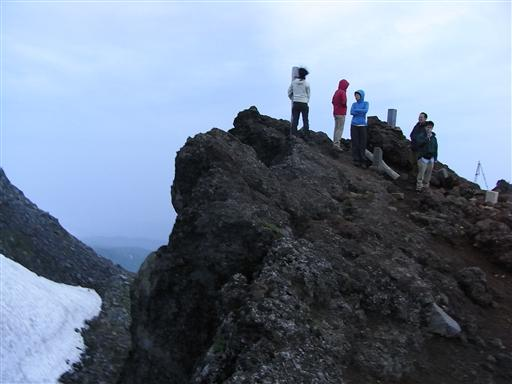
天気はあまり良くないが、今日は七高山から新山が良く見える。
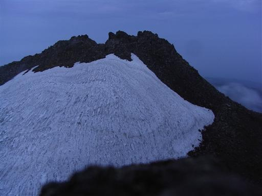
東の方が明るくなってきたが、雲があるため御来光は拝めず。
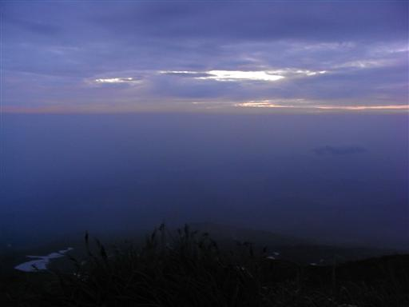
明るくなってくると、昨日は雲に覆われて全く見えなかった景色が広がってくる。
右の方にある新山を囲むように、外輪山が連なっている。
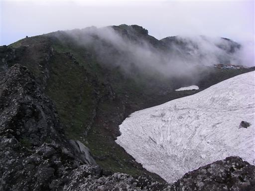
ドーム形の新山を眺めながら小屋に戻る。
新山にはまだかなり多くの残雪が残っている。
標高は2000mそこそこだが、早朝はかなり寒い。
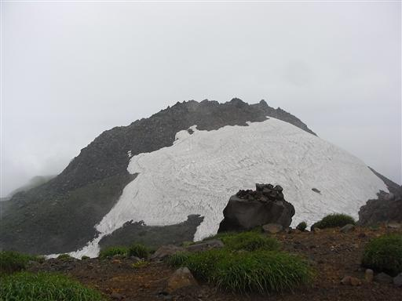
7:09 朝食をとって小屋を出発する。
すでに登山道は雲に覆われ始めている。
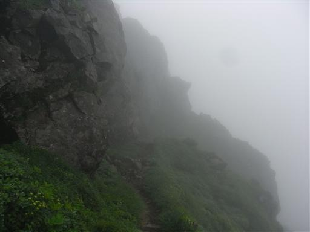
ハクサンフウロ。
多くの山で見られる有名な花。
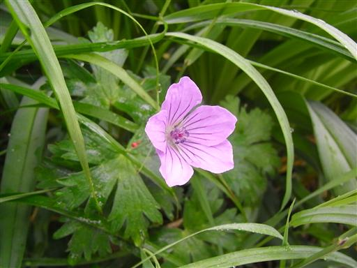
トウゲブキ。
今日も道端ではいろいろな花を見かける。
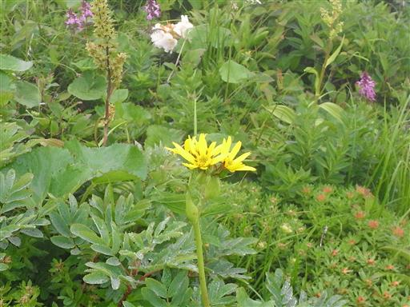
鳥海山から鳥海湖に向かう道は、昨日とは一転して多くの人で賑わっている。
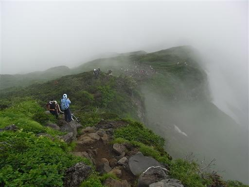
チングルマの実。花はもうすでに終わっている。
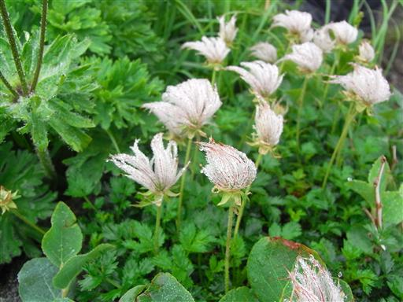
なだらかな稜線を歩いて行くと、目の前にニッコウキスゲの大群落が現れる。
はるか遠くの斜面まで、黄色で埋め尽くされている。

鞍部を過ぎて今度はなだらかな斜面を登っていく。
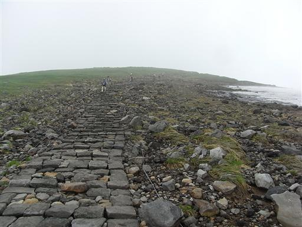
こちらの斜面ではハクサンイチゲのお花畑が広がっている。
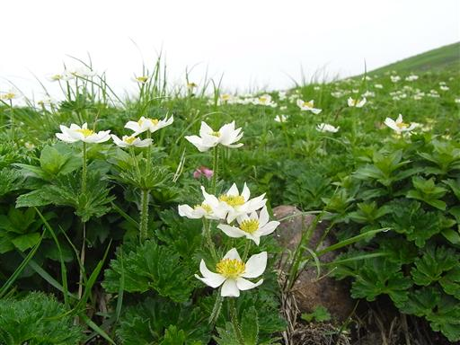
ミヤマウスユキソウ。
ヨーロッパでいうところのエーデルワイス。
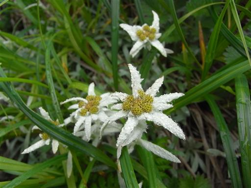
高台に登ると、眼下に鳥海湖が見えてくる。
古い噴火口に水がたまって出来た湖。
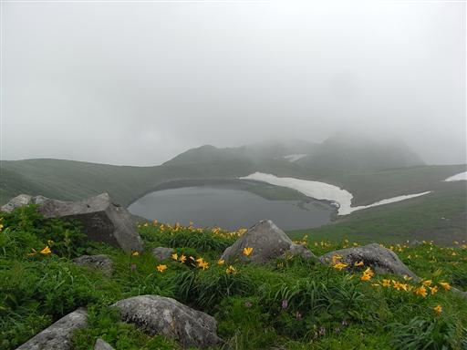
鳥海湖のすぐ側まで下りてくる。近くで見るとなかなか大きい湖だ。
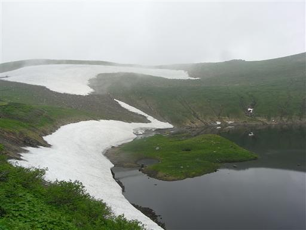
湖の側にはイワイチョウが白い花を咲かせている。
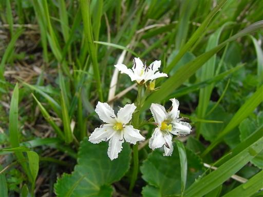
鳥海湖を後にし、下山道に入っていく。
下山道はいくつもあるが、今回は渓谷を辿って二ノ滝口に通じる道を選ぶ。

豊富に残る残雪。通る人が少ないのか、足跡は全くついていない。
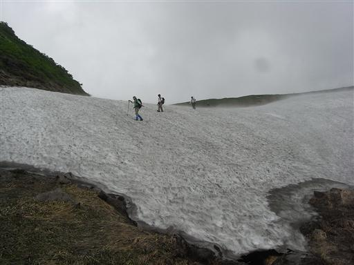
千畳ヶ原に到着。花はあまり咲いていないが、緑に覆われた美しい湿原。

平原の中を一本の木道がどこまでも続いている。
下山道に入ってからは、他に歩く人が全くいなくなる。
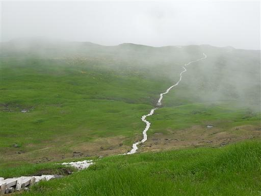
平原を過ぎると突然景色が変わり、辺りは鬱蒼とした森に覆われる。
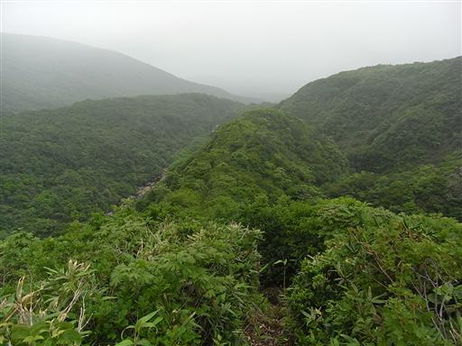
沢の渡渉地点。このルート最大の難所で、増水していると渡ることが出来ない。
今日は水も少なく、何の問題もない。
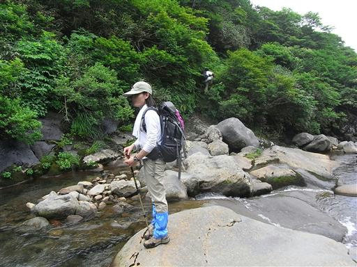
草木が繁茂し、道は少々荒れている。
どこまでもどこまでも、同じ景色が続く。
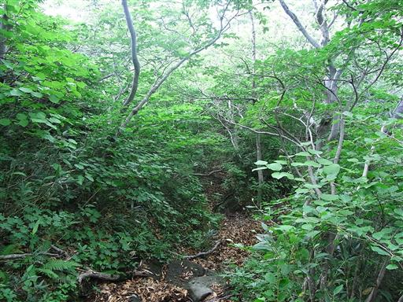
登山道は沢よりずいぶん高いところに付けられているが、
所々で滝を望むことができる。
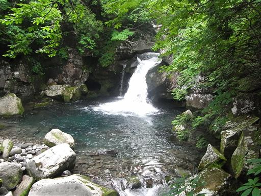
鳥海山麓を覆う森。ここまで同じ種類の木が続いていると少々不気味。

二ノ滝に到着。落差20mの大きな滝。
ここまで来れば下山はもうすぐ。
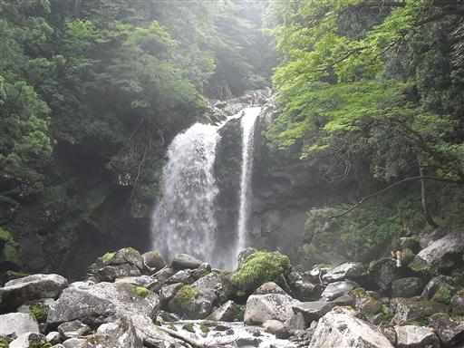
一ノ滝。こちらは一筋の滝。
近くに駐車場があるので、観光客もちらほらいる。
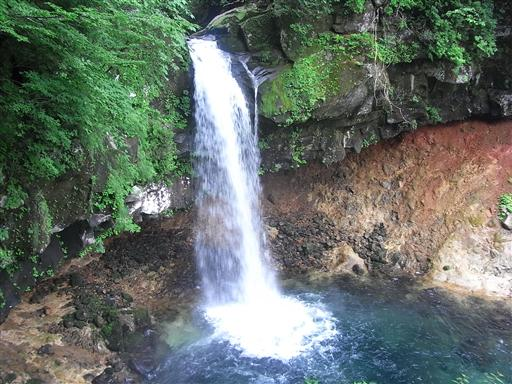
14:34 鳥居をくぐって、一ノ滝駐車場に到着。標高460m。
長い長い道のりがようやく終わる。
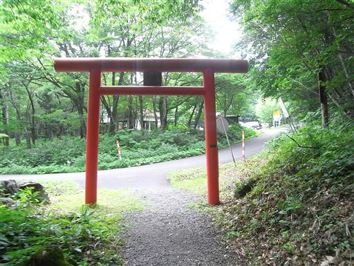
帰りのタクシーの運転手に教えてもらった水場。
この辺りでは一番おいしい水なんだそうだ。
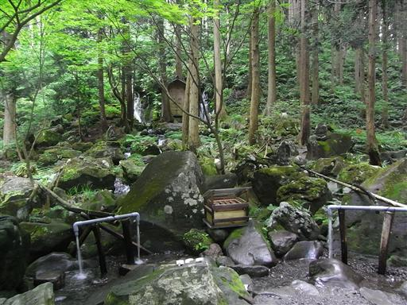
タクシーに乗って遊佐駅に到着。ここから電車で天童駅に向かう。
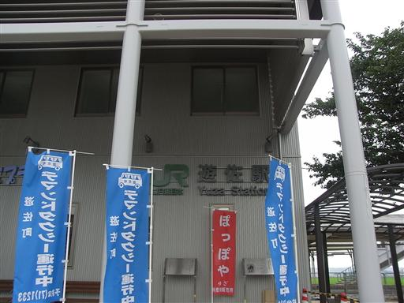
車窓からは風車が見えている。なぜか羽は全て止まっている。
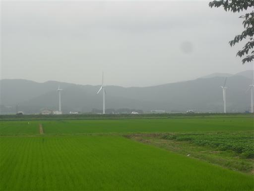
明日の蔵王山に備えて天童で宿泊する。
少々古めかしいホテルの温泉に寄る。
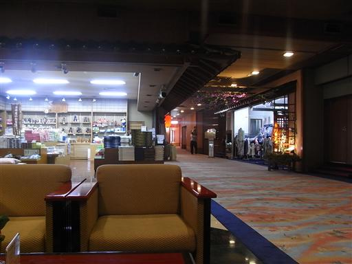